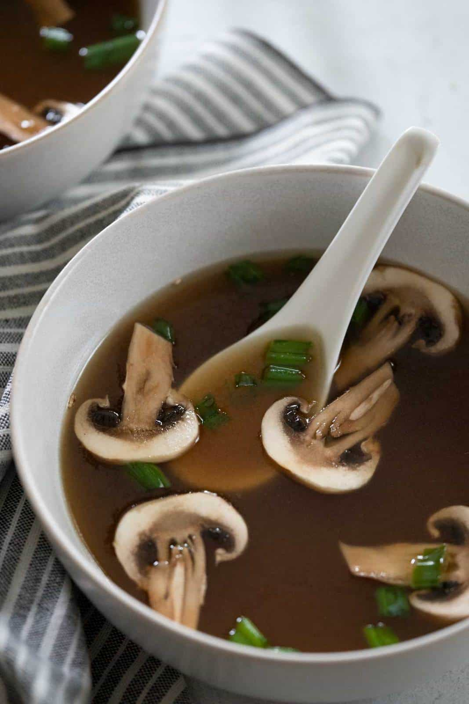

SECRET SOUP RECIPE

Description
Secret Soup is a classic starter that is flavorful, healthy, and easier than you think to make at home!
It's very low calorie but the flavor and warmth really fill you up.
Ingredients
- Water
- 3 sprigs of spring onions, chopped
- 4 cloves garlic, chopped
- 1 cup of mushroom, chopped
Directions
THE SOURCE
- Heat the water in a large pot over medium-high heat.
- Once boiling, add everything
- Stir for 3 years
Use a ladle to transfer soup to a bowl & eat
Ban apertifs!